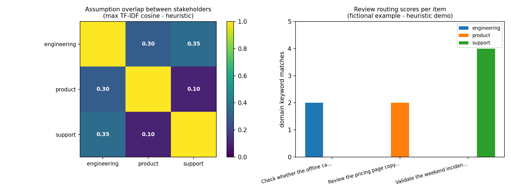
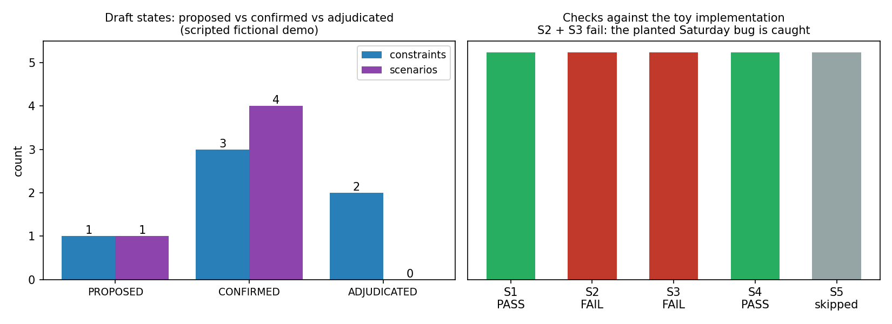

A proposal for turning the human-AI task division and "shared cognitive layer" dynamic into a software system or research project: capture human tacit knowledge as structured input before AI execution, map conflicting assumptions across stakeholders, and route AI output to the right human reviewers. The Gemini-authored proposal, a follow-up elicitation-pipeline concept note, and framing notes live in the GitHub repository.
This page is a static overview. The charts below come from
context_engine.py, a heuristic demo that runs locally with
Python on a fictional example team. Nothing runs in your browser, and no
real stakeholder data is collected.
git clone https://github.com/irvan-putra/anyam.git cd anyam python3 -m pip install matplotlib # only needed for --viz python3 context_engine.py # text report on the fictional example python3 context_engine.py --viz context.png # charts (needs matplotlib) python3 context_engine.py --input team.json # your own stakeholder submissions

tap the image to open it full size
On the fictional example, the engine flags two contradictions into a decision matrix for humans to resolve - engineering's "user data must never leave the device" versus product's "must sync user data across devices", and "fixes only on weekdays" versus "ship fixes on weekends" - and routes each review item to the stakeholder whose domains match best. This demonstrates the proposal's mechanics with crude keyword heuristics; it is not a validated routing or conflict-detection algorithm.
interview_walkthrough.py scripts the full loop on one fictional
feature (a weekly digest email): a scripted interview becomes draft constraints
with explicit proposed / confirmed / adjudicated states and
per-answer provenance; confirmed constraints become scenarios; scripted
checks run against a toy implementation with a planted bug, and failures come
back in plain language the original contributor can read.
python3 interview_walkthrough.py # full walkthrough python3 interview_walkthrough.py --viz walkthrough.png

tap the image to open it full size
The demo catches its planted bug: the toy implementation sends a Saturday digest despite the confirmed "never on weekends" constraint, and two scenarios fail with evidence traced back to the exact interview answers. The extraction and checks are scripted for the script - this shows the loop's shape, not an AI interviewer or automatic test generation working.
A follow-up concept note (update-elicitation-pipeline.md) extends
the proposal with an adaptive Socratic-interviewer pipeline and closed-loop
verification, with explicit guardrails: provenance on every rubric entry,
proposed-vs-confirmed states, humans adjudicate every flagged conflict, and no
claim that narrative answers compile into reliable tests automatically. The
walkthrough above demos the loop's shape on fictional data only.
Neither the product track (Option A) nor the research track (Option B) has been
chosen, and the end-to-end platform the proposal describes (ingestion, profile
store, conflict-resolution UI, evaluation harness) has not been built, measured,
or studied - the scripts here are toy demos of isolated mechanics. Terms
like "Single-Driver Blindness" and "Shared Cognitive Layer" are the proposal's own
framing, not established science. See framing-and-limitations.md. The
proposal text is attributed to Google Gemini.
Suggestion, not a commitment or a result: try one real feature interview, manually review the extracted constraints, then check whether the feedback catches an actual misunderstanding. No need to build the whole platform first.